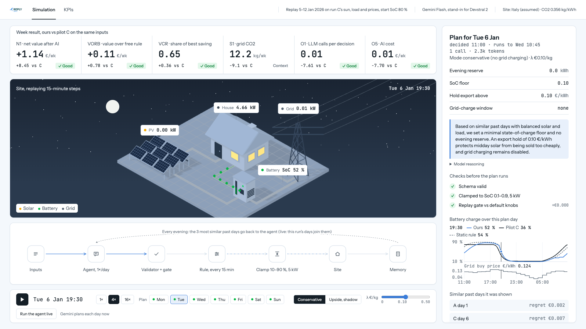

<!doctype html>
<!-- Pitch deck, style v1 (docs/mockups/deck-v1-*). Render: docs/deck/render.sh  (?s=0..8|a1..a4).
     Numbers: report §5.2, §6.2, §7, §8.2 (docs/PRESENTATION.md). One family, tabular figures, no mono. -->
<html><head><meta charset="utf-8">
<style>
@font-face{font-family:IS;src:url(../../demo/web/node_modules/@fontsource/instrument-sans/files/instrument-sans-latin-400-normal.woff2);font-weight:400}
@font-face{font-family:IS;src:url(../../demo/web/node_modules/@fontsource/instrument-sans/files/instrument-sans-latin-500-normal.woff2);font-weight:500}
@font-face{font-family:IS;src:url(../../demo/web/node_modules/@fontsource/instrument-sans/files/instrument-sans-latin-600-normal.woff2);font-weight:600}
:root{--bg:#FFFFFF;--ink:#151F27;--ink2:#3F4D5A;--mute:#66727E;--line:#D6E0EA;--faint:#EEF2F6;--card:#F4F8FC;
  --agent:#3A7DDA;--agent-soft:#E8F0FB;--agent-text:#2F6BC2;--alert:#EB0037;--alert-text:#C4002E}
*{box-sizing:border-box;margin:0;padding:0}
body{width:1920px;height:1080px;overflow:hidden;background:var(--bg);color:var(--ink);font:400 22px/1.4 IS,sans-serif;position:relative;font-variant-numeric:tabular-nums lining-nums}
header{padding:88px 96px 0;height:250px}
h1{font:600 44px/1.16 IS;letter-spacing:-0.012em;max-width:1470px;text-wrap:balance}
.logo{position:absolute;top:66px;right:96px;width:210px;height:70px;overflow:hidden}
.logo img{display:block;width:210px;margin-top:-60px}
main{position:absolute;left:96px;right:96px;top:290px;bottom:112px}
footer{position:absolute;left:96px;right:96px;bottom:44px;display:flex;justify-content:space-between;font:400 16px IS;color:var(--mute);border-top:1px solid var(--line);padding-top:14px}
svg text{font-family:IS;font-variant-numeric:tabular-nums}
.lbl{font:500 20px IS;fill:var(--ink)}
.sub{font:400 17px IS;fill:var(--mute)}
.num{font:400 18px IS;fill:var(--mute)}
.k{font-size:18px;color:var(--mute)}
.blue{color:var(--agent-text)}
/* stats */
.stat .v{font:600 64px/1 IS;letter-spacing:-0.02em}
.stat .v small{font:400 26px IS;color:var(--mute);margin-left:8px;letter-spacing:0}
.stat .t{margin-top:12px;color:var(--ink2);font-size:21px}
/* tables */
table{border-collapse:collapse;width:100%}
th,td{padding:15px 20px;text-align:right;border-bottom:1px solid var(--faint);white-space:nowrap}
th{font:500 18px IS;color:var(--mute);border-bottom:1px solid var(--line);vertical-align:bottom}
th:first-child,td:first-child{text-align:left;padding-left:0}
td{font-size:22px}
td.ours,th.ours{background:var(--agent-soft)}
th.ours{color:var(--agent-text)}
td.dim,th.dim{color:var(--mute)}
tr.total td{font-weight:600;border-top:1px solid var(--ink);border-bottom:0}
/* lists */
ol.n{list-style:none;counter-reset:n}
ol.n li{counter-increment:n;position:relative;padding-left:52px;margin-bottom:26px}
ol.n li::before{content:counter(n);position:absolute;left:0;top:-2px;width:32px;height:32px;border:1.5px solid var(--ink);border-radius:50%;font:600 17px/30px IS;text-align:center}
ol.n li b{font-weight:600;display:block;margin-bottom:4px}
ol.n li span{color:var(--ink2);font-size:20px}
.cols{display:grid;gap:64px}
.colhead{font:600 22px IS;padding-bottom:14px;margin-bottom:26px;border-bottom:1px solid var(--ink)}
</style></head>
<body>
<header><h1 id="t"></h1></header>
<div class="logo"></div>
<main id="m"></main>
<footer><span id="src"></span><span id="pg"></span></footer>
<script>
const s=new URLSearchParams(location.search).get('s')||'0';
const $=id=>document.getElementById(id), NS='http://www.w3.org/2000/svg', M=$('m');
const css=n=>getComputedStyle(document.body).getPropertyValue(n).trim();
function el(p,tag,a,txt){const e=document.createElementNS(NS,tag);for(const k in a)e.setAttribute(k,a[k]);if(txt!=null)e.textContent=txt;p.appendChild(e);return e}
function arrow(defs,id,color){const m=el(defs,'marker',{id,viewBox:'0 0 10 10',refX:9,refY:5,markerWidth:8,markerHeight:8,orient:'auto-start-reverse'});
  el(m,'path',{d:'M0,1 L9,5 L0,9',fill:'none',stroke:color,'stroke-width':1.6})}
const eur=v=>(v>0?'+':v<0?'−':'')+'€'+Math.abs(v).toFixed(2);
function frame(title,src,page){$('t').textContent=title;$('src').textContent=src;$('pg').textContent=page}

const S={
'0'(){ // title
  document.querySelector('header').remove();document.querySelector('footer').remove();
  M.style.top='0';M.style.bottom='0';
  M.innerHTML=`<div style="position:absolute;left:0;top:330px;max-width:1300px">
    <div style="font:600 112px/1.02 IS;letter-spacing:-0.025em">One carbon-aware agent, not two</div>
    <div style="margin-top:40px;font-size:30px;color:var(--ink2)">How to make Sense Reply's battery agents pay for themselves</div></div>
    <div style="position:absolute;left:0;right:0;bottom:96px;display:flex;justify-content:space-between;align-items:flex-end;border-top:1px solid var(--line);padding-top:24px;font-size:22px">
    <span>Sydney · Amir · Francesco</span><span style="color:var(--mute)">Albert School Business Deep Dive, case B2 · November 2026</span></div>`;
},
'1'(){
  frame('One agent that plans once a day turns the pilot\'s €7.31 weekly loss into a €1.10 gain and cuts the AI bill by 99%',
    'Source: report §1, §8.2 · pilot C measured, our framework modelled on the same sun, load and prices · one winter week, Italy assumed','1 / 8');
  const C=[['Net value after AI cost','€ per week','−7.31','+1.10'],['AI bill','€ per week','7.71','0.01'],['Grid CO2','kg per week','21.3','13.5']];
  M.innerHTML=`<div class="cols" style="grid-template-columns:repeat(3,1fr);margin-top:150px">${C.map(c=>`
    <div style="border-top:1px solid var(--ink);padding-top:26px">
      <div style="font:500 24px IS">${c[0]}</div><div class="k">${c[1]}</div>
      <div style="display:flex;align-items:baseline;gap:28px;margin-top:56px">
        <div><div class="k">Pilot C today</div><div style="font:400 56px/1.1 IS;color:var(--mute);letter-spacing:-0.02em;margin-top:8px">${c[2]}</div></div>
        <svg width="56" height="20" style="flex:none"><path d="M0 10H52M44 3l8 7-8 7" fill="none" stroke="${css('--ink')}" stroke-width="2"/></svg>
        <div><div class="k blue">Our framework</div><div style="font:600 104px/1 IS;color:var(--agent-text);letter-spacing:-0.03em;margin-top:8px">${c[3]}</div></div>
      </div></div>`).join('')}</div>`;
},
'2'(){
  frame('We judge every agent against a free rule, because "saved vs no battery" alone makes the pilots look profitable',
    'Source: report §4 step 3, §5 · data/Sense_Reply_B2_KPI_Conformity.xlsx (thresholds editable)','2 / 8');
  const T=[['No battery','Does the battery plus agent pay at all?'],['Static rule','Does the AI beat a free rule?','key'],['Perfect-foresight optimiser','How much of the possible saving is captured?']];
  const G=[['Value',[['S net','saving after battery wear'],['VCR','share of achievable saving'],['VORB','value over the static rule']]],
    ['AI economics',[['N1','net value after AI cost'],['N2','AI cost per € saved'],['O1','LLM calls per decision'],['O5','LLM cost per week']]],
    ['Carbon',[['S2b','CO2 avoided vs the rule'],['MAC','cost per tonne avoided']]],
    ['Self-use and grid',[['SCR','self-consumption of PV'],['SSR','self-sufficiency'],['PSR','peak shaving']]],
    ['Battery',[['B4','time at charge limits'],['C5','share of expensive imports']]]];
  M.innerHTML=`<div class="k" style="margin-bottom:14px">Each run is scored against three twins built from its own sun, load and prices</div>
   <div style="display:grid;grid-template-columns:repeat(3,1fr);gap:16px">${T.map(t=>`<div style="padding:20px 24px;border-radius:10px;${t[2]?'background:var(--agent-soft);':'border:1px solid var(--line);'}">
     <div style="font:600 22px IS${t[2]?';color:var(--agent-text)':''}">${t[0]}</div><div style="color:var(--ink2);font-size:20px;margin-top:4px">${t[1]}</div></div>`).join('')}</div>
   <div style="display:grid;grid-template-columns:repeat(5,1fr);gap:40px;margin-top:52px">${G.map(g=>`<div>
     <div style="font:600 22px IS;padding-bottom:12px;border-bottom:1px solid var(--ink);margin-bottom:8px">${g[0]}</div>
     ${g[1].map(k=>`<div style="padding:9px 0;border-bottom:1px solid var(--faint)"><span style="font-weight:600">${k[0]}</span> <span style="color:var(--ink2);font-size:19px">${k[1]}</span></div>`).join('')}</div>`).join('')}</div>
   <div style="position:absolute;left:0;bottom:0;font-size:24px">Today the pilots meet the threshold on <b style="font-weight:600">5–6 of 19–20</b> KPIs.</div>`;
},
'3'(){
  frame('Both pilots lose to a free rule, and their AI bill is 8 to 12 times what the battery saves',
    'Source: report §1, §4 step 9, §5.2 · AI cost at the assumed Devstral 2 list price ($0.40 / $2.00 per M tokens, 0.86 €/$)','3 / 8');
  const W=1080,H=520,x0=250,sc=(W-x0-150)/8, g=el(M,'svg',{width:W,height:H,style:'position:absolute;left:0;top:10px'});
  const ink=css('--ink'),mu=css('--mute'),ag=css('--agent'),al=css('--alert');
  const R=[{n:'Pilot A',d:'cost agent',sv:0.60,ai:4.74,r:'7.8×'},{n:'Pilot C',d:'cost + sustainability',sv:0.63,ai:7.71,r:'12.2×'}];
  for(let t=0;t<=8;t+=2){el(g,'line',{x1:x0+t*sc,x2:x0+t*sc,y1:0,y2:H-60,stroke:css('--faint')});el(g,'text',{x:x0+t*sc,y:H-28,'text-anchor':'middle',class:'num'},'€'+t)}
  el(g,'text',{x:W-150,y:H-2,'text-anchor':'end',class:'sub'},'€ per week');
  R.forEach((r,i)=>{const y=40+i*220;
    el(g,'text',{x:0,y:y+30,class:'lbl',style:'font-weight:600;font-size:24px'},r.n);el(g,'text',{x:0,y:y+58,class:'sub'},r.d);
    el(g,'rect',{x:x0,y,width:r.sv*sc,height:44,rx:4,fill:ag});
    el(g,'text',{x:x0+r.sv*sc+12,y:y+30,class:'lbl'},'Saving vs no battery  €'+r.sv.toFixed(2));
    el(g,'rect',{x:x0,y:y+56,width:r.ai*sc,height:44,rx:4,fill:ink});
    el(g,'text',{x:x0+r.ai*sc+12,y:y+86,class:'lbl'},'AI bill  €'+r.ai.toFixed(2));
    el(g,'text',{x:x0+r.ai*sc+12,y:y+112,class:'sub',style:`fill:${css('--alert-text')}`},r.r+' the saving');
  });
  M.insertAdjacentHTML('beforeend',`<div class="k" style="position:absolute;left:0;bottom:0;font-size:20px;color:var(--ink2)">Net after AI cost: pilot A <b style="font-weight:600">−€4.33</b>, pilot C <b style="font-weight:600">−€7.31</b>, static rule <b style="font-weight:600">+€1.03</b> with no AI at all</div>
   <div style="position:absolute;right:0;top:0;width:560px"><div class="colhead">Why they lose, read from the prompts</div>
   <ol class="n"><li><b>A fixed 80% target</b><span>fills the battery by late morning, so midday sun goes to the grid</span></li>
   <li><b>Export valued at zero</b><span>sold at €0.09, bought back at €0.11–0.12 in the evening</span></li>
   <li><b>A blind second agent</b><span>gets no price and no CO2, so it can only push "import less"</span></li></ol></div>`);
},
'4'(){
  frame('The second agent buys CO2 at €4,300 a tonne, 48 times the EU carbon price; a carbon weight inside one agent costs €31–72',
    'Source: report §6.2, §7.2 · modelled on run C inputs, one winter week · CO2 at 0.356 kg/kWh · Italy assumed','4 / 8');
  const W=1160,H=660, m={l:96,r:24,t:20,b:76}, X=[10,24], Y=[-8,2.5];
  const x=d=>m.l+(d-X[0])/(X[1]-X[0])*(W-m.l-m.r), y=d=>m.t+(Y[1]-d)/(Y[1]-Y[0])*(H-m.t-m.b);
  const g=el(M,'svg',{width:W,height:H,viewBox:`0 0 ${W} ${H}`});
  for(let t=-8;t<=2;t+=2){el(g,'line',{x1:m.l,x2:W-m.r,y1:y(t),y2:y(t),stroke:css(t===0?'--ink':'--faint'),'stroke-width':t===0?1.5:1});
    el(g,'text',{x:m.l-16,y:y(t)+6,'text-anchor':'end',class:'num'},(t>0?'+':t<0?'−':'')+Math.abs(t))}
  for(let t=10;t<=24;t+=2) el(g,'text',{x:x(t),y:H-m.b+34,'text-anchor':'middle',class:'num'},t);
  el(g,'text',{x:W-m.r,y:H-8,'text-anchor':'end',class:'sub'},'Grid CO2, kg per week  (lower is cleaner)');
  el(g,'text',{x:m.l-16,y:m.t-2,'text-anchor':'end',class:'sub'},'€/wk');
  el(g,'text',{x:W-m.r,y:y(0)+30,'text-anchor':'end',class:'sub'},'Break-even after AI cost');
  el(g,'text',{x:m.l+12,y:y(-7.6),class:'sub'},'Net value after AI cost (N1)');
  const defs=el(g,'defs',{});arrow(defs,'ah',css('--alert'));
  el(g,'line',{x1:x(21.9)-6,y1:y(-4.33)+14,x2:x(21.3)+4,y2:y(-7.31)-16,stroke:css('--alert'),'stroke-width':2,'stroke-dasharray':'6 5','marker-end':'url(#ah)'});
  el(g,'text',{x:x(21.6)+22,y:y(-5.9),class:'lbl',style:`fill:${css('--alert-text')}`},'+ second agent');
  el(g,'text',{x:x(21.6)+22,y:y(-5.9)+26,class:'sub'},'+€2.97 AI cost, −0.7 kg');
  const P=[{n:'Pilot A',d:'cost agent',c:21.9,e:-4.33,k:'pilot',lx:-18,ly:6,a:'end'},
    {n:'Pilot C',d:'cost + sustainability agents',c:21.3,e:-7.31,k:'pilot',lx:-18,ly:6,a:'end'},
    {n:'Static rule',d:'free, no AI',c:11.9,e:1.03,k:'rule',lx:-4,ly:-46,a:'start'},
    {n:'Ours, conservative',d:'one agent, λ €0.10/kg',c:13.5,e:1.10,k:'ours',lx:22,ly:28,a:'start'},
    {n:'Ours, upside',d:'grid charging, shadow mode',c:22.2,e:1.78,k:'up',lx:-20,ly:-20,a:'end'}];
  for(const p of P){const cx=x(p.c),cy=y(p.e),ag=css('--agent'),bg=css('--bg');
    const st={pilot:{fill:css('--ink'),stroke:bg},rule:{fill:bg,stroke:css('--ink2')},ours:{fill:ag,stroke:bg},up:{fill:bg,stroke:ag}}[p.k];
    el(g,'circle',{cx,cy,r:p.k==='ours'?11:10,fill:st.fill,stroke:st.stroke,'stroke-width':p.k==='rule'||p.k==='up'?3:2.5,'stroke-dasharray':p.k==='up'?'4 3':''});
    el(g,'text',{x:cx+p.lx,y:cy+p.ly,'text-anchor':p.a,class:'lbl',style:p.k==='ours'||p.k==='up'?`fill:${css('--agent-text')}`:''},p.n);
    el(g,'text',{x:cx+p.lx,y:cy+p.ly+24,'text-anchor':p.a,class:'sub'},p.d+' · '+eur(p.e))}
  M.insertAdjacentHTML('beforeend',`<div style="position:absolute;right:0;top:0;width:500px">
    ${[['4,300','What the second agent pays per tonne of CO2 avoided (€2,000 on hourly carbon)',''],['90','EU ETS carbon price, Dec-2026 contract',''],['31–72','Carbon weight of €0.10/kg inside one agent','blue']]
      .map((r,i)=>`<div class="stat" style="padding:${i?26:4}px 0 26px;border-bottom:1px solid var(--line)"><div class="v ${r[2]}">${r[0]}<small>€/t</small></div><div class="t">${r[1]}</div></div>`).join('')}</div>`);
},
'5'(){
  frame('The agent sets three knobs a day; a rule and a safety clamp run the battery every 15 minutes, behind a replay gate',
    'Source: report §3, docs/PROPOSAL.md · same stage names as the demo pipeline','5 / 8');
  const W=1728,H=520,g=el(M,'svg',{width:W,height:H,viewBox:`0 0 ${W} ${H}`,style:'position:absolute;top:0;left:0'});
  const ink=css('--ink'),ln=css('--line'),ag=css('--agent'),card=css('--card'),bg=css('--bg'),al=css('--alert');
  const ny=70,nh=150,N=[
    {x:0,w:290,t:'Inputs',r:['Day-ahead prices','Hourly CO2, ENTSO-E Italy','3–5 similar past days']},
    {x:370,w:260,t:'Agent',r:['1 call a day','Goal: € + λ·CO2','Returns 3 knobs + reason'],k:'ai'},
    {x:690,w:260,t:'Validator',r:['Schema + limits','Replay gate:','beats the rule?'],k:'ai'},
    {x:1030,w:200,t:'Rule',r:['Every 15 min','Knobs to kW']},{x:1290,w:200,t:'Clamp',r:['SoC 10–90%','±5 kW']},{x:1550,w:178,t:'Site',r:['PV, battery,','load, grid']}];
  el(g,'rect',{x:350,y:ny-62,width:620,height:nh+92,rx:12,fill:css('--agent-soft')});
  el(g,'text',{x:370,y:ny-24,class:'lbl',style:`fill:${css('--agent-text')}`},'AI plans once a day');
  el(g,'rect',{x:1010,y:ny-62,width:718,height:nh+92,rx:12,fill:'none',stroke:ln,'stroke-width':1.5});
  el(g,'text',{x:1030,y:ny-24,class:'lbl'},'Rule executes, no LLM on the control path');
  const defs=el(g,'defs',{});arrow(defs,'a',ink);arrow(defs,'am',ag);arrow(defs,'af',al);
  N.forEach((n,i)=>{el(g,'rect',{x:n.x,y:ny,width:n.w,height:nh,rx:10,fill:n.k?bg:card,stroke:n.k?ag:ln,'stroke-width':n.k?2:1.5});
    el(g,'text',{x:n.x+20,y:ny+38,class:'lbl',style:'font-weight:600'},n.t);
    n.r.forEach((r,j)=>el(g,'text',{x:n.x+20,y:ny+72+j*26,class:'sub',style:`fill:${css('--ink2')}`},r));
    if(i<N.length-1)el(g,'line',{x1:n.x+n.w+6,y1:ny+nh/2,x2:N[i+1].x-6,y2:ny+nh/2,stroke:ink,'stroke-width':2,'marker-end':'url(#a)'})});
  el(g,'path',{d:`M1639,${ny+nh+6} V${ny+nh+86} H145 V${ny+nh+8}`,fill:'none',stroke:ag,'stroke-width':2,'stroke-dasharray':'7 6','marker-end':'url(#am)'});
  el(g,'rect',{x:620,y:ny+nh+70,width:520,height:34,fill:bg});
  el(g,'text',{x:880,y:ny+nh+93,'text-anchor':'middle',class:'sub',style:`fill:${css('--agent-text')}`},'Memory: one row a day (knobs, €, CO2, regret)');
  const fy=ny+nh+150;el(g,'text',{x:0,y:fy,class:'lbl'},'If the agent fails or the gate blocks:');
  let fx=400;['agent plan','previous valid plan','static rule'].forEach((f,i)=>{el(g,'text',{x:fx,y:fy,class:'lbl',style:i?`fill:${css('--ink2')}`:''},f);
    const w=f.length*10.4;if(i<2)el(g,'line',{x1:fx+w+14,y1:fy-7,x2:fx+w+58,y2:fy-7,stroke:al,'stroke-width':2,'marker-end':'url(#af)'});fx+=w+76});
  M.insertAdjacentHTML('beforeend',`<div style="position:absolute;left:0;right:0;bottom:0;display:grid;grid-template-columns:repeat(3,1fr);border-top:1px solid var(--line)">
    ${[['LLM calls per day','~730','1–3'],['Export valued at','€0','sell price'],['Battery target','80% fixed',"tonight's evening load"]].map((c,i)=>`
    <div style="padding:22px 28px 0 ${i?28:0}px;${i?'border-left:1px solid var(--line)':''}"><div class="k">${c[0]}</div>
    <div style="font:500 30px IS;margin-top:6px"><s style="color:var(--mute);font-weight:400;text-decoration-thickness:2px;margin-right:14px">${c[1]}</s>${c[2]}</div></div>`).join('')}</div>`);
},
'6'(){
  frame('Demo: one week of the framework, played at 16 times speed','Precomputed run on run C\'s sun, load and prices · Gemini Flash stands in for Devstral 2 · backup: 60 s recording','6 / 8');
  const W=[['Agent','The plan at 11:00: three knobs and the reason the agent gives'],['Memory','The similar past days it was shown, and how they went'],['Validator','A day the replay gate blocks, and the fallback to the previous plan'],['KPIs','Our run next to pilot A, pilot C and the static rule']];
  M.innerHTML=`
   <div style="font:500 24px IS;color:var(--ink2)">sense-reply-demo.onrender.com</div>
   <div class="colhead" style="margin-top:48px;max-width:600px">What to watch</div>
   <ol class="n" style="max-width:600px">${W.map(w=>`<li><b>${w[0]}</b><span>${w[1]}</span></li>`).join('')}</ol>`;
},
'7'(){
  frame('On our own KPIs, the framework goes from 5–6 to 16 conforming KPIs, and its worst case is the free rule',
    'Source: report §6.2, §8.2 · S5 modelled on run C inputs, start SoC 0.80 · upside runs in shadow mode until a replay gate approves it','7 / 8');
  const R=[['Net value after AI cost','€/wk',[-4.33,-7.31,1.10,1.78],'e'],['Value over the static rule','€/wk',[-0.73,-0.67,0.08,0.79],'e'],['AI bill','€/wk',['4.74','7.71','0.01','0.01']],
    ['Grid CO2','kg/wk',['21.9','21.3','13.5','22.2']],['Self-consumption of PV','share',['0.52','0.54','0.78','0.53']],['Peak grid import','kW',['4.81','2.93','2.24','5.11']]];
  const f=(v,t)=>t==='e'?(v>0?'+':v<0?'−':'')+Math.abs(v).toFixed(2):v;
  M.innerHTML=`<table style="max-width:1500px"><tr><th>KPI</th><th>Unit</th><th>Pilot A</th><th>Pilot C</th><th class="ours">Ours, conservative</th><th class="dim">Ours, upside<br>(shadow mode)</th></tr>
   ${R.map(r=>`<tr><td>${r[0]}</td><td class="dim" style="text-align:left">${r[1]}</td>${r[2].map((v,i)=>`<td class="${i===2?'ours':i===3?'dim':''}">${f(v,r[3])}</td>`).join('')}</tr>`).join('')}
   <tr class="total"><td>KPIs meeting the threshold</td><td class="dim" style="text-align:left">of 19–20</td><td>5–6</td><td>5–6</td><td class="ours" style="color:var(--agent-text)">16</td><td class="dim">14</td></tr></table>
   <div style="position:absolute;left:0;bottom:0;font-size:22px;color:var(--ink2);max-width:1500px">Most of the conservative gain comes from dropping the 80% target and valuing export. The upside mode earns more by charging from the grid at night, and gives the CO2 back.</div>`;
},
'8'(){
  frame('These results come from one modelled winter week; three data gaps decide whether they hold','Source: report §9.3, §10.3','8 / 8');
  M.innerHTML=`<div class="cols" style="grid-template-columns:1.25fr 1fr;gap:96px">
   <div><div class="colhead">What the data cannot tell us yet</div><ol class="n">
    <li><b>No CO2 field and no agent logs</b><span>We estimate carbon from ENTSO-E; win rate and regret of the pilots stay unmeasured</span></li>
    <li><b>Runs that are not controlled</b><span>Start charge and panel dirt differ (A 0.57, C 0.80); only A vs C, each against its own twins, is fair</span></li>
    <li><b>One winter week of simulated sun</b><span>PV peaks at 10:00 with 14 hours of light in January: no real weather behind it</span></li></ol></div>
   <div><div class="colhead">What we would do next</div><ol class="n">
    <li><b>Replay a summer week</b><span>The ranking must hold before any promise to a client</span></li>
    <li><b>Log every proposal and score</b><span>We can then score each decision as well as the weekly bill</span></li>
    <li><b>Feed a weather forecast</b><span>Replace "tomorrow looks like today" for sun and load</span></li>
    <li><b>Run the upside mode in shadow</b><span>No commands sent until the replay gate approves it</span></li></ol></div></div>`;
},
'a1'(){
  frame('Appendix A1. The two modes of our framework are the real choice; the pilots are weak on money, AI cost and carbon at once','Source: report §7.1 · ratings compare the options on the week analysed','A1');
  const H=['Pilot C','Static rule','Ours, conservative','Ours, upside'];
  const R=[['Net saving (€/wk)','w 0.40','m 1.03','m 1.12','s 1.80'],['Value over the free rule','w −0.67','· reference','m +0.08','s +0.79'],['AI cost','w €7.7/wk','s none','s €0.01/wk','s €0.01/wk'],
    ['Grid CO2','w 21.3 kg','s 11.9 kg','s 13.5 kg','w 22.2 kg'],['Peak on the grid connection','m 2.9 kW','s 2.2 kW','s 2.2 kW','w 5.1 kW'],['Battery stress','s 0% at limits','m 41% at limits','m 30% at limits','m 34%, most cycles'],
    ['Failure points','w LLM on control path','s rule only','s rule + clamp, fallback','s depends on forecast'],['Evidence','· observed','· modelled','· modelled','· modelled, optimistic'],['Effort to deploy','· built','· hours','· weeks','· weeks + shadow']];
  const tag={s:['Strong','#027A31'],m:['Medium','var(--ink2)'],w:['Weak','var(--alert-text)'],'·':['','var(--ink2)']};
  M.innerHTML=`<table><tr><th>Dimension</th>${H.map((h,i)=>`<th style="text-align:left" class="${i===2?'ours':''}">${h}</th>`).join('')}</tr>
   ${R.map(r=>`<tr><td>${r[0]}</td>${r.slice(1).map((c,i)=>{const t=tag[c[0]];return `<td style="text-align:left;padding:11px 20px" class="${i===2?'ours':''}">${t[0]?`<span style="font-weight:600;color:${t[1]}">${t[0]}</span> `:''}<span style="color:var(--ink2)">${c.slice(2)}</span></td>`}).join('')}</tr>`).join('')}</table>`;
  M.querySelectorAll('td').forEach(t=>t.style.fontSize='20px');
},
'a2'(){
  frame('Appendix A2. We rebuild the bill from energy and prices, then credit the charge left in the battery','Source: report §4 step 4 · wear €0.005/kWh from BSS.json · AI bill from DataIndex.xlsx tokens at the assumed Devstral 2 price','A2');
  const F=[['Adjusted bill','C<sub>adj</sub> = Σ<sub>t</sub> ( I<sub>t</sub> · π<sup>buy</sup><sub>t</sub> − X<sub>t</sub> · π<sup>sell</sup><sub>t</sub> ) − ( SoC<sub>end</sub> − SoC<sub>start</sub> ) · 10 · 0.95 · mean π<sup>buy</sup>'],
    ['Saving vs no battery','S = C<sub>nb</sub> − C<sub>adj</sub>'],['Saving after wear','S<sub>net</sub> = S − 0.005 · Σ<sub>t</sub> E<sup>dis</sup><sub>t</sub>'],
    ['Net value after AI cost','N1 = S<sub>net</sub> − L<sub>AI</sub>'],['AI cost per € saved','N2 = L<sub>AI</sub> / S'],['Share of achievable saving','VCR = S / S*,  S* from the perfect-foresight optimiser'],['Value over the static rule','VORB = S − S<sub>rule</sub>']];
  M.innerHTML=`<table>${F.map(f=>`<tr><td style="width:460px;color:var(--ink2);font-size:21px">${f[0]}</td><td style="text-align:left;font:400 26px IS">${f[1]}</td></tr>`).join('')}</table>
   <div style="position:absolute;left:0;bottom:0;font-size:20px;color:var(--ink2)">I import, X export, E<sup>dis</sup> energy discharged, π prices per 15-minute step, C<sub>nb</sub> bill of the no-battery twin, L<sub>AI</sub> weekly AI bill.</div>`;
},
'a3'(){
  frame('Appendix A3. Grid CO2 is estimated outside the platform data, from hourly ENTSO-E generation for Italy','Source: report §4 step 7 · ENTSO-E Transparency A75, area 10YIT-GRTN-----B · IPCC AR5 lifecycle medians','A3');
  const R=[['Source','ENTSO-E aggregated generation per type, Italy, 5–14 Jan 2026'],['Time','UTC converted to Europe/Rome, averaged to hourly values'],
    ['Intensity','CI = Σ gen × EF / Σ gen; gas 490, coal 820, hydro 24, solar 48, wind 11 g/kWh'],['Result','214–439 g/kWh; mean 356 over the telemetry samples'],
    ['Match','Hourly CI matched to each 15-minute import; exports not credited'],['Deck basis','Constant 0.356 kg/kWh, as in the workbook; hourly is the check'],
    ['Finding','Pilots buy at hours 4.8% dirtier than the mean, so the sustainability agent does not time its imports']];
  M.innerHTML=`<ol class="n" style="columns:2;column-gap:96px">${R.map(r=>`<li style="break-inside:avoid"><b>${r[0]}</b><span>${r[1]}</span></li>`).join('')}</ol>`;
},
'a4'(){
  frame('Appendix A4. We corrected five points in the source files before computing any KPI','Source: report §2 step 2, §10.2','A4');
  const R=[['grid.cost field','Not a running total: power × price per sample','Bill rebuilt from energy × price'],['Wear €0.10/kWh','Not supported by BSS.json','€0.005/kWh, derived; shown as a sensitivity'],
    ['Raw A, B, C comparison','Different PV and start charge','Only A vs C, each against its own twins'],['Missing sample in run B','9 Jan 20:00','Rebuilt from cumulative counters; B kept out of conclusions'],
    ['Carbon factor 350 g/kWh','Illustrative, not the workbook value','0.356 kg/kWh, hourly series as the check']];
  M.innerHTML=`<table><tr><th>Point</th><th style="text-align:left">Issue</th><th style="text-align:left">What we did</th></tr>
   ${R.map(r=>`<tr><td style="font-weight:500">${r[0]}</td><td style="text-align:left;color:var(--ink2)">${r[1]}</td><td style="text-align:left">${r[2]}</td></tr>`).join('')}</table>`;
}};
S[s]();
</script></body></html>
